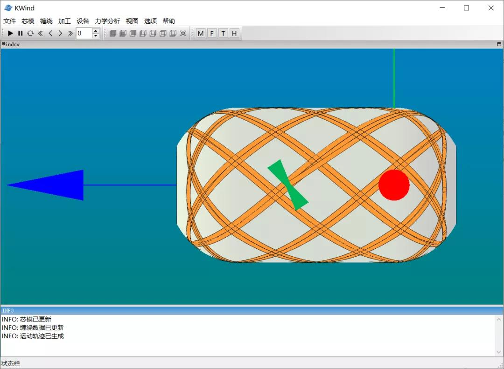
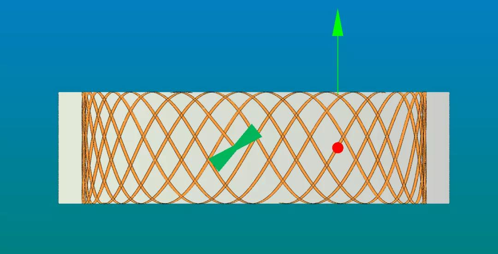
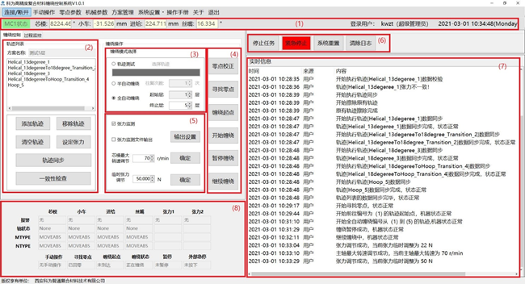
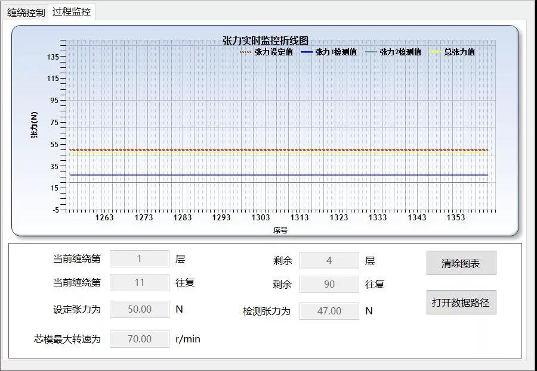
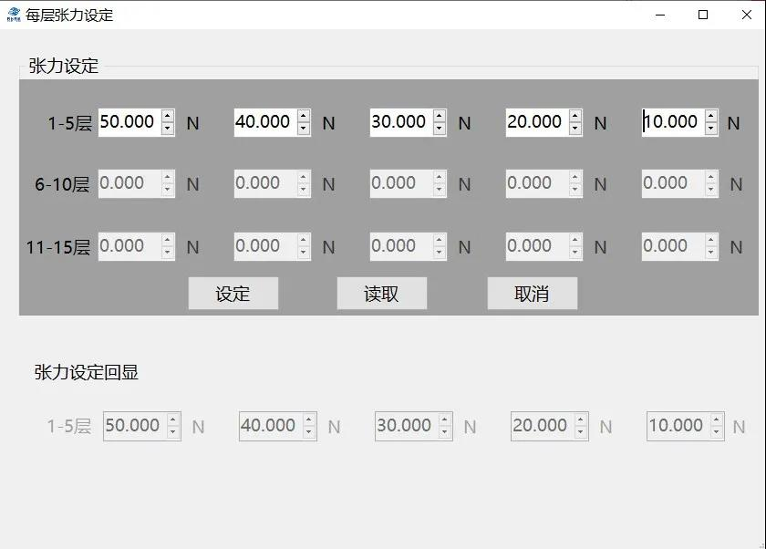

缠绕仿真软件Kwind
纤维缠绕仿真软件Kwind为西安科为智通复合材料技术有限公司(KWZT-Tech)开发。Kwind是第一款自主研发的国产商用纤维缠绕三维仿真软件，具备测地线与非测地线缠绕线型规划能力，可实现相应线型缠绕三维可视化运动仿真。Kwind软件可以生成相应的缠绕机丝嘴运行轨迹文件及有限元仿真分析缠绕数据文件，有限元仿真分析缠绕数据文件可由该系列Kwind-Simulation软件解析执行，与商业有限元软件无缝衔接，自动生成缠绕壳体有限元模型；缠绕机丝嘴运行轨迹文件可由缠绕控制软件(Kwind-Control)或其他控制系统执行，用于实际产品生产制造。西安科为智通复合材料技术有限公司Kwind系列软件是纤维缠绕工艺完整解决方案系列软件，实现了从缠绕线型仿真、有限元分析和实际制造一整套线上解决方案。
Kwind软件主要功能与特点
- （1）线型设计考虑了实际缠绕过程中的摩擦系数，可以在线型设计之初考虑纤维滑线系数，最大限度避免滑线；
- （2）可以根据用户输入参数推荐满足缠绕规律的线型；
- （3）芯模几何支持参数化定义及外部导入，增加用户制造产品范围；
- （4）线型缠绕三维可视化运动仿真功能，可有效避免线型畸变、布纱不均匀、纤维架空及打滑问题；
- （5）丝嘴运动轨迹可选择开放圆柱包络、封闭圆柱包络和子午线包络三种模式，便于用户缠绕不同类型的芯模；
- （6）有限元接口数据文件便于缠绕结构有限元建模分析，丝嘴运行轨迹文件可直接交由缠绕设备执行；

---Kwind压力容器缠绕仿真

---Kwind圆筒缠绕仿真
Kwind仿真视频
Kwind软件特色
- （1）运行速度快，可实现缠绕机各个关节快速、流畅控制
- （2）控制精度高
- （3）支持一次性多层缠绕
- （4）缠绕方案保存于数据库中，方便用户切换不同缠绕产品，无需重新计算导入
- （5）精密的张力控制系统：采用先进的气电张力控制系统，对出纱张力进行精密控制
- （6）安全性高，发现异常立即自动停止

---缠绕控制

---过程监控

---张力设定